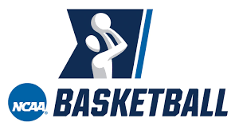

| | | | |  | | |
|
We believe that American basketball offers an electrifying combination of athleticism, skill, and entertainment that captivates millions of fans worldwide. With high-flying dunks, pinpoint passes, and intense competition, following American basketball promises to be an adrenaline-pumping experience that will keep you on the edge of your seat and leave you craving for more.
Explore our site to learn more about: NBA Basketball: Discover the power of a growth mindset and learn how to cultivate this mindset in yourself. Mens College Basketball: Immerse yourself in the excitement and raw emotion of collegiate basketball as top-tier student-athletes compete with heart and determination, showcasing their skills and vying for glory on the national stage in March Madness and beyond. Womens College Basketball: Witness the sheer talent, resilience, and tenacity of women's college basketball, where extraordinary athletes showcase their athleticism, teamwork, and passion in thrilling games that inspire and empower, leaving you captivated by their incredible performances. Click on the menu above to explore each topic in depth. We also offer videos to help you understand the talent that these players posses. Thank you for visiting the American Basketball Page, We are excited to join you on your journey towards growing the game across the nation. |